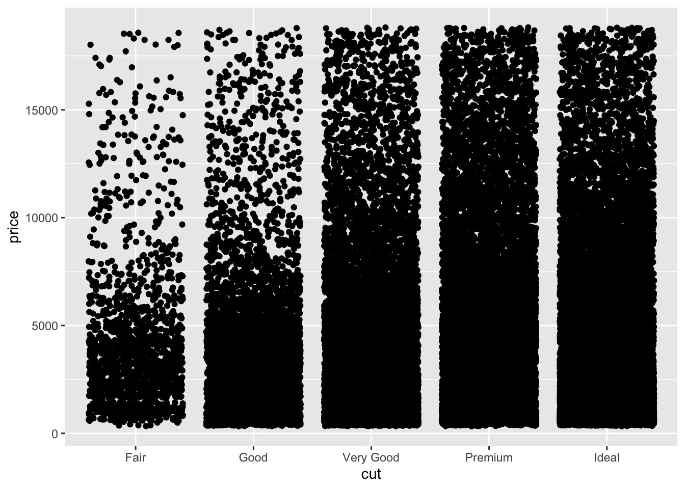
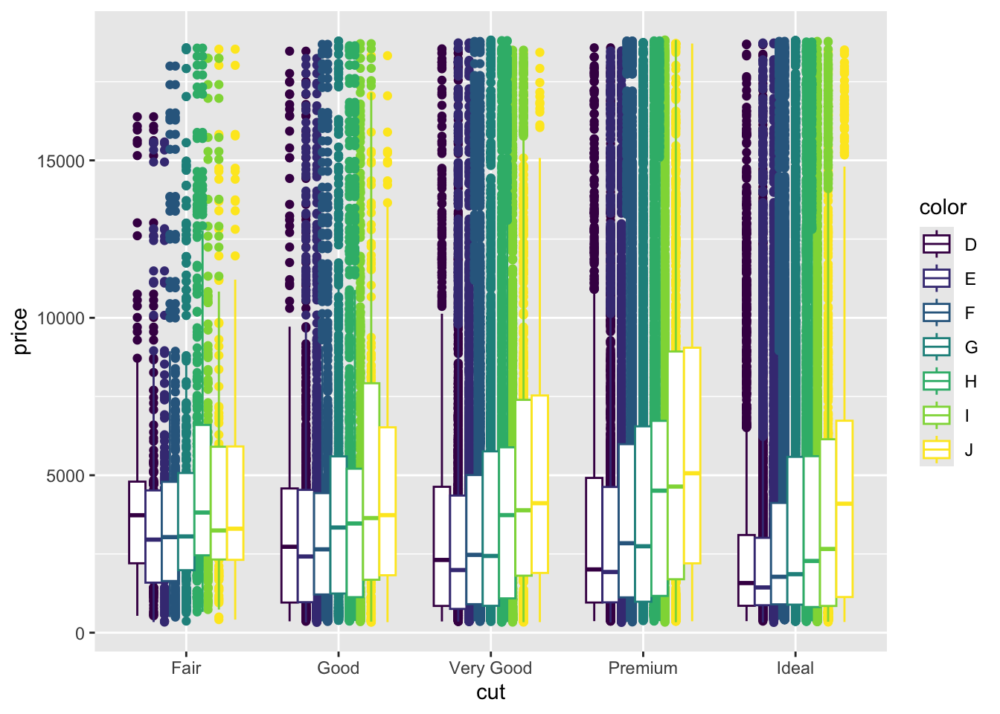
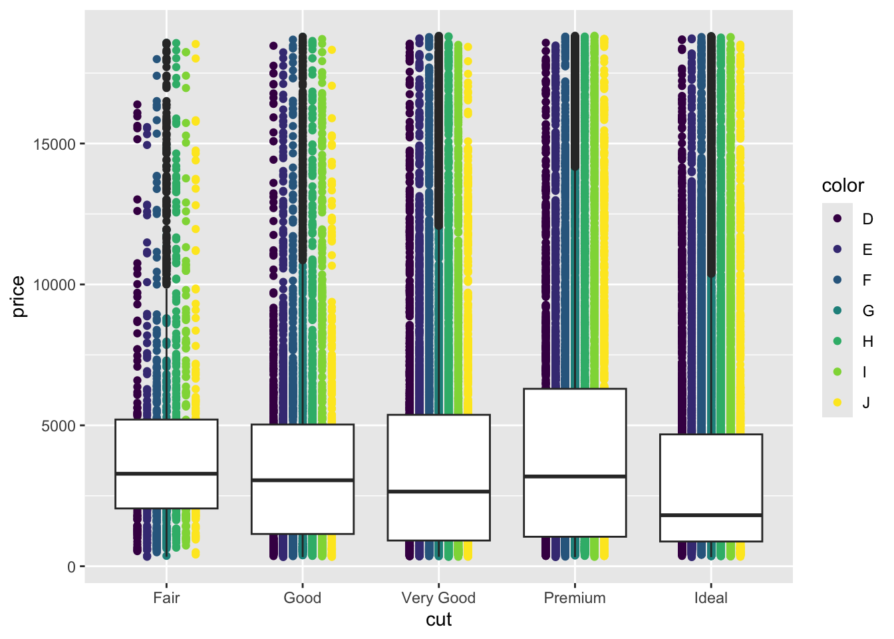
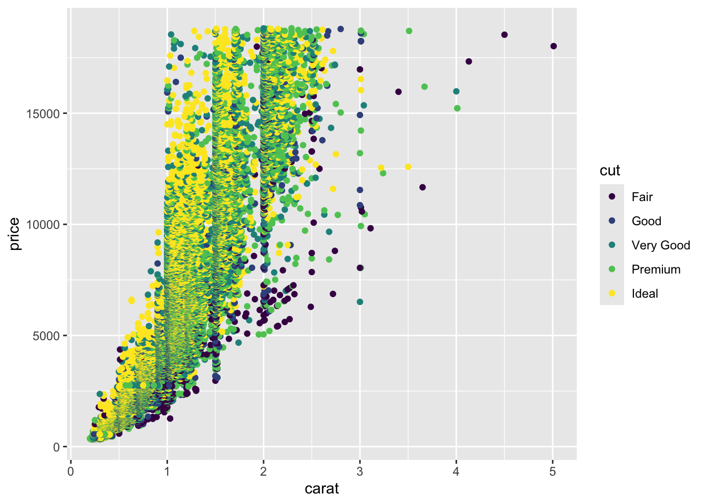
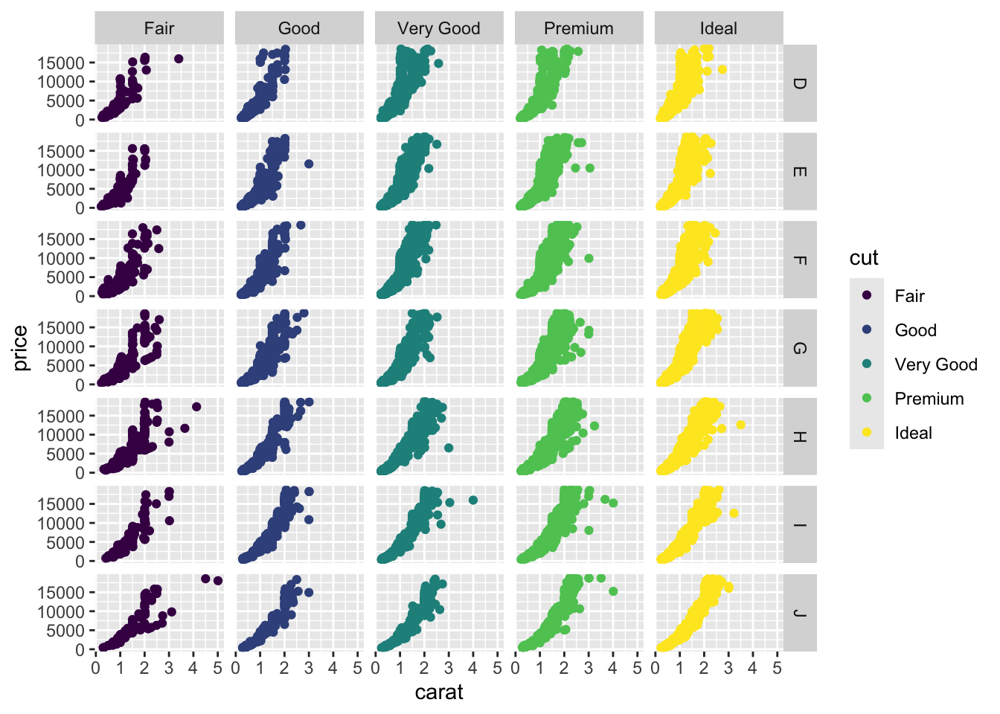

Topic 6 Using Factors to Subset Data and Plots
6.1 About this chapter
- Questions:
- How can I make plots that compare multiple categories?"
- Objectives:
- Understand factors
- Understand colouring and faceting on factors
- Use factors for summaries and plot design
- Keypoints:
- A factor is a value of a categorical variable, or the different values a label can take
- Factors are needed to subset and add attributes to data dynamically
6.2 Factors
In previous plots we’ve been using categories, specifically the Species category to split our data, colour our plots etc. These categorical columns are called Factors in R. Looking at the diamonds data set we can see how this is set up in R.
head(diamonds)## # A tibble: 6 x 10
## carat cut color clarity depth table price x y z
## <dbl> <ord> <ord> <ord> <dbl> <dbl> <int> <dbl> <dbl> <dbl>
## 1 0.23 Ideal E SI2 61.5 55 326 3.95 3.98 2.43
## 2 0.21 Premium E SI1 59.8 61 326 3.89 3.84 2.31
## 3 0.23 Good E VS1 56.9 65 327 4.05 4.07 2.31
## 4 0.29 Premium I VS2 62.4 58 334 4.2 4.23 2.63
## 5 0.31 Good J SI2 63.3 58 335 4.34 4.35 2.75
## 6 0.24 Very Good J VVS2 62.8 57 336 3.94 3.96 2.48Here we can see the cut, color and clarity columns are all non-numeric, textual data. These are the factor variables of this dataset. We can confirm that by asking for the class of the column, that is, the type of data in it. We use the dataset $ column name syntax for this.
class(diamonds$color)## [1] "ordered" "factor"class(diamonds$depth)## [1] "numeric"We can also ask for all the different values of the factor, in R called the levels
levels(diamonds$color)## [1] "D" "E" "F" "G" "H" "I" "J"levels(diamonds$cut)## [1] "Fair" "Good" "Very Good" "Premium" "Ideal"6.3 Colouring by factors
Let’s look at applying mappings by a factor. Let’s look at how price varies by cut.
p <- ggplot(diamonds) + aes(cut,price)
p + geom_jitter()
Now let’s throw a second variable in there, lets see how color varies within each cut. We do this by creating a new aesthetic mapping within the geom_jitter()
p + geom_jitter(aes(colour=color))
The spots are all overlapping, we can force the different colours to stay separate with the position option. We use position_dodge() to make them dodge each other. The width option tells the spots how far to stay apart.
p + geom_jitter(aes(colour=color), position=position_dodge(width=0.5) )
We can also throw other geoms on top in the same way. EG Boxplots for each cut and colour
p + geom_jitter(aes(colour=color), position=position_dodge(width=0.5) ) + geom_boxplot( aes(colour=color), position=position_dodge() )
Remember layers/geoms are independent, so can be set up to show individual aspects of the data. Let’s have a boxplot for the whole of the cut, irrespective of the colour.
p + geom_jitter(aes(colour=color),position=position_dodge(width=0.5)) + geom_boxplot() 
And of course, the whole thing still works even if we are comparing two numerical columns. We can still use the aesthetic mapping in the geom to colour our points by a factor
ggplot(diamonds) + aes(carat, price) + geom_point(aes(colour=cut))
6.4 Small multiple plots
Sometimes, trying to squeeze a lot of data into one plot isn’t the clearest way to show it. Instead small multiple plots (different data, same settings) can be used. In ggplot, this is called faceting and is done with the facet_wrap() or facet_grid() function. We use the factors to define the facet. Let’s add faceting to the previous plot
p <- ggplot(diamonds) + aes(carat, price)
p + geom_point(aes(colour=cut)) + facet_wrap( ~ cut)
Here we see the plot is divided into panels, one for each ‘cut’. The facet_wrap() function puts all the panels into a single row, but wll wrap that row as space demands. The syntax is a bit odd, we used the ~ operator to mean ‘varies by’ , even though we only used one variable. It’s just a quirk of ggplot.
The facet_grid() function forces a grid structure and can take more than one factor. Now the ~ ‘varies by’ syntax makes more sense:
p + geom_point(aes(colour=cut)) + facet_grid(color ~ cut)
6.5 Quiz
The built in dataset CO2 describes measurement of CO2 uptake versus concentration for Quebec and Mississippi grasses in chilled and nonchilled tests. The dataset is as follows:
Typeis a factor column with two levelsQuebecandMississippiTreatmentis a factor colum with two levelsnonchilledandchilledUptakeis a numerical colum with CO2 uptake rate in micromoles per metre squared per secondPlantis a factor with twelve levels, one for each individual plant assayed.
- Create a plot with
geom_point()that shows the Plant on the x-axis and the Uptake on the y-axis. Colour the points by ‘Type’ andfacet_wrap()byTreatmentto get a subplot for chilled and nonchilled.